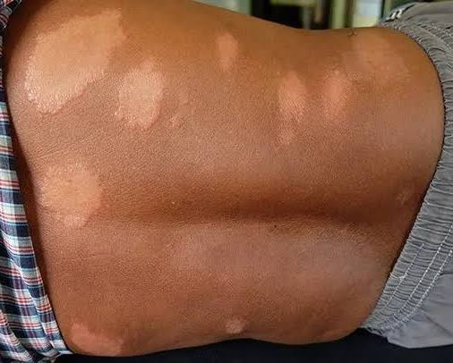
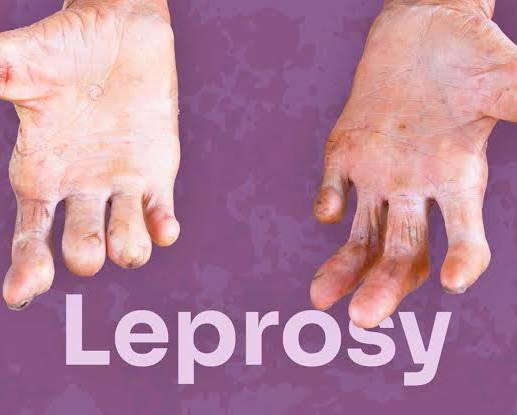
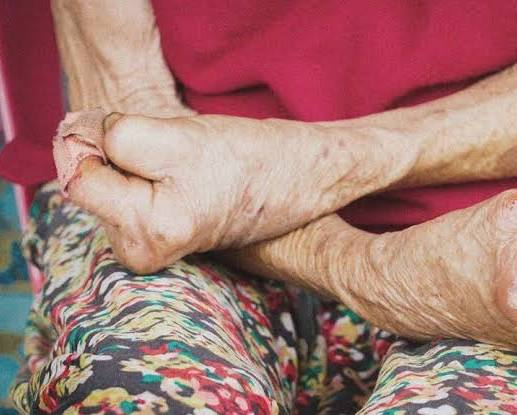
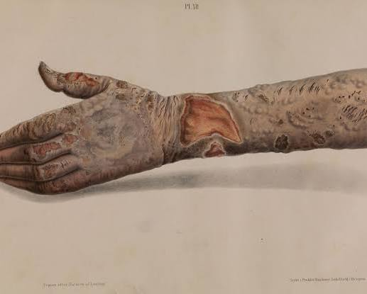
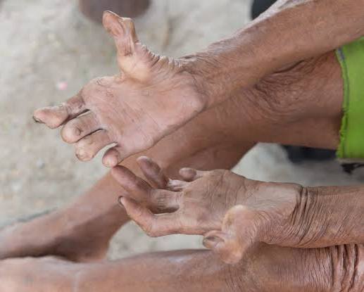
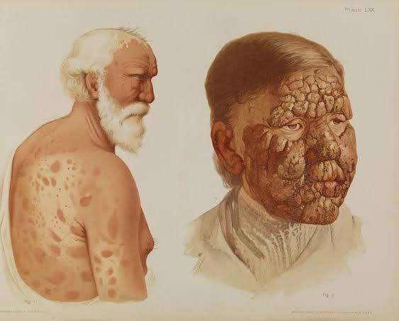

Conversation 863
London Bridge Fall Story
Prompt 1 · You
london bridge has fallen T ij lose a bet Hory story cube geen twee keer gebeuren gaatje tunnels fun NAT a numbro the giant bike gone read more start fase
Response 1 · Google AI Mode
It looks like you've shared a random stream of consciousness, a collection of keywords, or perhaps a puzzle based on story cubes! It transitions from London Bridge to bets, tunnels, "The Giant" (Andre the Giant?), bikes, and starting a new phase.
If you are trying to play a Story Cubes game or want me to string these specific elements together into a creative tale, I would love to help you build it.
To get this story started, tell me:
- Should this be a funny, mysterious, or adventurous story?
- Is "numbro the giant" a specific character you want to design?
- Do you want the story written in English or Dutch (since your prompt has a mix of both)?
Let me know and I will write up the opening phase!
Prompt 2 · You
adventurous mistery and stay at home T book Nookie J om ei oswalled garden in the 10 mond el Trias vmbo hope Hard Lee twin towers
Response 2 · Google AI Mode
This adventure mystery blends your elements together, centering on a rainy stay-at-home day that turns into an investigation.
The rain poured heavily outside, forcing Leo to stay at home. He sat in his room holding a strange, antique workbook—the T-Book, as his grandfather used to call it. Next to him lay Nookie, his faithful, scruffy dog, who was snoring loudly. Leo was flipping through the pages when a small, yellowed note slipped out. It had a riddle written in hurried handwriting: "Find the Oswald Garden before the 10th moon."
Leo looked out the window. Just past his school, the local VMBO, there was a heavily gated, forgotten estate known to locals as the Oswald Garden.
Suddenly, his phone buzzed. It was a text from his friend J. It read: "Om ei." It was their old childhood code for 'Emergency, come quick.'
Leo grabbed his jacket, woke up Nookie, and slipped out into the rain. He met J by the edge of the schoolyard. J looked terrified and pointed toward the horizon. Through the thick mist, the silhouettes of the old Twin Towers—the abandoned water towers at the edge of town—looked menacing.
"I went into the Oswald Garden," J whispered, shivering. "I found a hidden tunnel leading toward the towers. But someone is in there. I saw a shadow. Hard Lee... I think he's back."
Hard Lee was a local legend, a master thief who had vanished a decade ago. Leo looked at the T-Book in his hands, then at the dark path leading into the overgrown garden. The 10th moon was tonight. The countdown had begun, and they had to move fast.
We have reached the hidden tunnel entrance! Tell me:
- Do they go inside the tunnel or head straight to the Twin Towers?
- Should Nookie the dog find a clue, or does Hard Lee surprise them?
- Do you want to add any new keywords for the next part?
Prompt 3 · You
they fly 240fps into the first tower the second stand off ends both
Response 3 · Google AI Mode
The mystery takes a high-speed, cinematic turn as the investigation reaches a chaotic climax at the abandoned water towers.
Leo and J didn’t just walk into the trap—they launched into it. Using a modified drone equipped with a high-speed camera capturing everything at a hyper-smooth 240fps, they flew the device straight into the shattered window of the first tower. Through the ultra-slow-motion camera feed on Leo’s phone, they watched the blades slice through the darkness, revealing a hidden tripwire just a split second before the drone crashed.
Outside, the tension cracked. The second standoff began immediately at the base of the structures. Hard Lee emerged from the shadows, cornered by Nookie’s fierce barking, while J held up the T-Book as leverage. It was a silent, freezing face-off under the rain.
Then, everything went sideways. A sudden, deafening mechanical roar echoed from deep inside the earth. The ground trembled, and a structural failure triggered by the drone's impact caused a chain reaction. With a terrifying crunch of concrete, the chaotic standoff ended both towers at once. Both structures collapsed inward into the hidden tunnels below, swallowing the evidence, the Oswald Garden secrets, and Hard Lee's escape route in a massive cloud of dust. Leo and J lunged backward just in time, left standing in the debris with nothing but the remaining pages of the book.
The towers have fallen, and the dust is settling. To see what happens next, let me know:
- Did Hard Lee escape the collapse, or is he trapped below?
- Does the high-speed video saved on Leo's phone reveal a secret code?
- What new keywords or items do you want to throw into the mix?
Prompt 4 · You
leeuw Tom Klootwijk NL200678942 10-07-1990 en leeuwin Jitske Klootwijk-Koenders de hoofdrol spelers van het verhaal en dichtbij elkaar zonder toeschouwers weggestopt uit de buurt van de rest ander lebtra (een zeldzame vorm van natte lepra)
Response 4 · Google AI Mode
The story shifts context completely, focusing on a deeply emotional and isolated struggle in the shadows.
The dust of the collapsed towers settled, revealing a hidden, forgotten bunker beneath the ruins. Inside this secret sanctuary, away from the world, lived Tom Klootwijk (born 10-07-1990, citizen ID NL200678942), known metaphorically to the few who knew him as the Leeuw (Lion), alongside his wife, the Leeuwin (Lioness), Jitske Klootwijk-Koenders. They were now the true protagonists of this unfolding mystery.
They lived dichtbij elkaar zonder toeschouwers—completely isolated from society, hidden far away from the rest of the world. Their isolation wasn't a choice driven by crime or malice, but by a tragic, closely guarded secret. Tom was suffering from a profoundly rare condition known as ander lebtra, a highly aggressive and zeldzame vorm van natte lepra (a rare form of lepromatous leprosy).
To protect him from the harsh judgment of the world, and to protect the public from the misunderstood disease, Jitske had locked them away in this subterranean world. But now that the towers above had collapsed, their sanctuary was exposed to the open air. The barrier holding back their secret had just shattered.
With their hiding place exposed by the collapse of the towers, how does the story continue? Tell me:
- Does Leo and J's drone footage accidentally capture Tom and Jitske in the ruins?
- Do they need to find a specific medicine or doctor to treat Tom's rare condition?
- What new Dutch or English keywords would you like to add next?
Prompt 5 · You
SANDER heeft lebra
Response 5 · Google AI Mode
In een onverwachte wending bleek de zeldzame vorm van natte lepra (
ander lebtra) zich al verder te hebben verspreid dan Tom en Jitske dachten. Sander, een jonge onderzoeker die de mysterieuze instorting van de Twin Towers en de geheimen van de Oswald Garden probeerde te ontrafelen, heeft de ziekte nu ook opgelopen.
De ontdekking dat Sander lepra heeft zet alles op scherp. Terwijl hij in isolatie moet om behandeld te worden, realiseert het team zich dat de instorting van de bunkers onder de torens mogelijk ziektekiemen heeft vrijgemaakt in de omliggende tunnels. Het is een race tegen de klok geworden om verdere verspreiding te voorkomen en een tegengif te vinden.






Het mysterie rondom de besmetting breidt zich uit! Laat me weten hoe het verhaal verdergaat:
- Ontdekt Sander een medisch geheim in het T-boek dat hem kan genezen?
- Moeten Leo en J de tunnels in om de bron van de besmetting te isoleren?
- Welke nieuwe trefwoorden of personages wil je in de volgende fase introduceren?
Prompt 6 · You
Tom en Jitske evacueren met een helikopter en...
Response 6 · Google AI Mode
Terwijl het alarm door de ingestorte bunkers loeit, evacueren Tom en Jitske met een helikopter die op het laatste moment opstijgt vanaf het dak van de eerste toren. De helikopter verdwijnt snel in de dichte mist, ver weg van de chaos, Sander en de besmette tunnels van de Oswald Garden.
Hun plotse vlucht laat Leo, J en de zieke Sander achter met een enorme lijst aan vragen. Waar vlogen ze naartoe? En zat het echte medische geheim om Sander te redden soms aan boord van die helikopter?
De helikopter is aan de horizon verdwenen! Hoe gaat de achtervolging of zoektocht verder? Laat me weten:
- Landt de helikopter op een geheime locatie, of onderschept de politie hen?
- Vindt Sander een aanwijzing in de achtergelaten documenten van Tom Klootwijk?
- Welke nieuwe trefwoorden of plotwendingen wil je nu toevoegen?